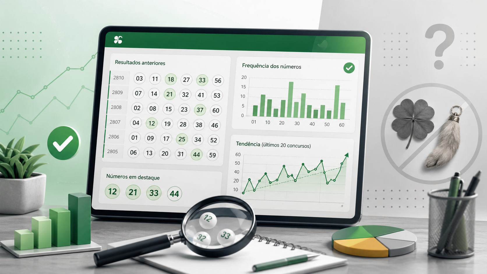

Como analisar resultados anteriores da Mega-Sena sem cair em mitos
Muitas pessoas gostam de observar resultados anteriores da Mega-Sena para tentar encontrar padrões, repetições ou pistas sobre concursos futuros. Esse interesse é natural, principalmente para quem gosta de comparar dezenas, frequências e sequências históricas.
O problema começa quando a análise do histórico passa a ser confundida com previsão confiável. Neste artigo, você vai entender como analisar resultados anteriores de forma mais lúcida, quais erros de interpretação são mais comuns e como usar esse tipo de informação sem cair em mitos.

O que significa analisar resultados anteriores
Analisar resultados anteriores significa observar concursos já realizados para identificar informações como frequência de dezenas, distribuição numérica, repetição de certos grupos de números e comportamento histórico dos sorteios ao longo do tempo.
Esse tipo de consulta pode ser útil para fins informativos, curiosidade estatística e comparação de dados. O histórico ajuda o usuário a conhecer melhor os concursos passados, mas não deve ser tratado como garantia de comportamento futuro.
Por que tanta gente procura padrões
O cérebro humano tende a buscar ordem, repetição e coerência em diferentes contextos. Em loterias, isso aparece quando o usuário tenta identificar dezenas “quentes”, números “atrasados” ou combinações que pareçam mais prováveis com base no que já aconteceu antes.
Essa busca por padrão torna a análise interessante, mas também pode levar a conclusões precipitadas quando o histórico é interpretado como se fosse uma ferramenta de previsão.
Frequência histórica não é previsão
Um dos mitos mais comuns é imaginar que um número que saiu muitas vezes no passado tem mais chance de sair novamente no próximo concurso. Outro erro parecido é acreditar que uma dezena pouco sorteada está “devendo aparecer”.
Em sorteios independentes, esse tipo de raciocínio pode ser enganoso. O histórico mostra o que já aconteceu, mas não determina o que vai acontecer em seguida.
O mito dos números atrasados
A ideia de “número atrasado” é muito popular. Ela parte da suposição de que, se determinada dezena ficou muito tempo sem aparecer, então estaria mais próxima de ser sorteada. Esse raciocínio parece intuitivo, mas não funciona como garantia em eventos aleatórios.
Em análises históricas, esse dado pode até ser registrado como curiosidade, mas não deve ser usado como promessa de correção futura do sorteio.
O valor real do histórico
O histórico de resultados tem valor principalmente como fonte de consulta, comparação e análise estatística. Ele permite observar como concursos passados foram distribuídos, quais dezenas apareceram mais vezes e como certos intervalos numéricos se comportaram ao longo do tempo.
Esse tipo de conteúdo é útil para quem deseja estudar resultados anteriores com mais organização, sem transformar a análise em superstição.
Como analisar com mais equilíbrio
A melhor forma de analisar resultados anteriores é tratá-los como dados históricos, não como sinais ocultos sobre o próximo sorteio. Isso ajuda a manter a leitura em um nível informativo e evita interpretações excessivamente deterministas.
O usuário pode observar frequências, comparar concursos e explorar padrões visuais ou estatísticos, mas sempre lembrando que isso não equivale a prever o resultado seguinte.
O papel do Consulta Mega nessa análise
No Consulta Mega, o histórico de resultados pode ser usado como apoio para consulta de concursos passados, conferência de combinações e leitura organizada de dezenas já registradas. Isso é útil para quem deseja navegar por informações anteriores de maneira prática.
Ainda assim, os dados devem ser interpretados como apoio informativo. A validação oficial de concursos, resultados e premiações deve sempre ser feita pelos canais oficiais da Caixa.
Conclusão
Analisar resultados anteriores da Mega-Sena pode ser interessante e útil, desde que essa leitura seja feita com equilíbrio. O histórico ajuda a compreender o passado dos concursos, mas não elimina a natureza aleatória dos próximos sorteios.
Quanto mais o usuário entende essa diferença, mais fácil se torna explorar dados históricos sem cair em mitos, falsas previsões ou interpretações equivocadas sobre o comportamento da loteria.